86Borders
Director of User Experience
86Borders.com
I’ve worked at 86Borders for nearly four years and gained the title Director of User Experience. While there,
I’ve gained extensive experience as a:
- Business Analyst
- Product Manager
- Designer
- Developer
- Video Editor
- Strategist
External Website
86borders.com greets every user with a splash page, allowing them to quickly
sign in, register, or view other marketing, help, or legal materials. Last year I planned, designed, generated the
assets for, and coded the original framework for this section of the website. It’s fully responsive, accommodating
screens of all sizes.
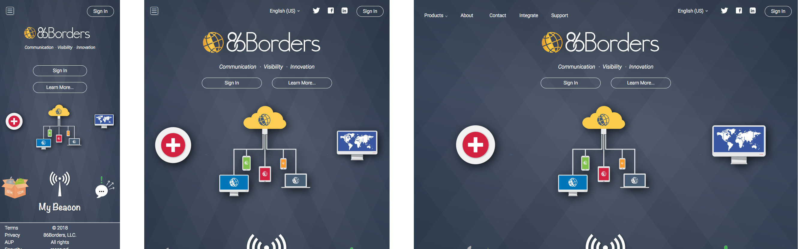
The single page website looks the user’s cookies and identifies if the user is known and authenticated. If so,
the sign in button (upper right) says “Open” and provides an immediate gateway to the internal platform.
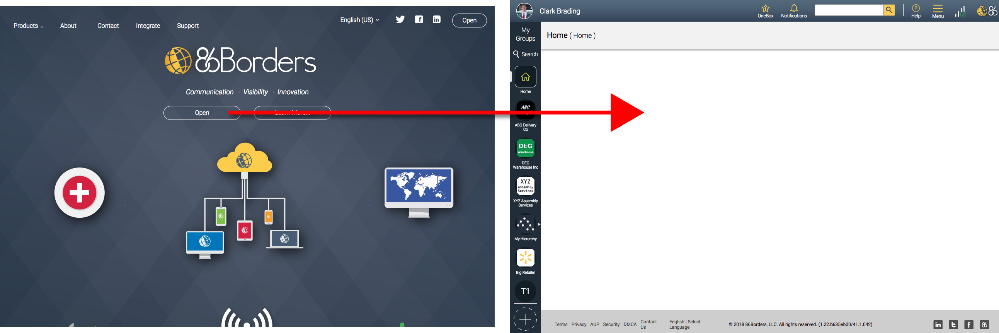
The sign in card has all of the features one would expect to see: email, password, forgot password, and access to
registration.
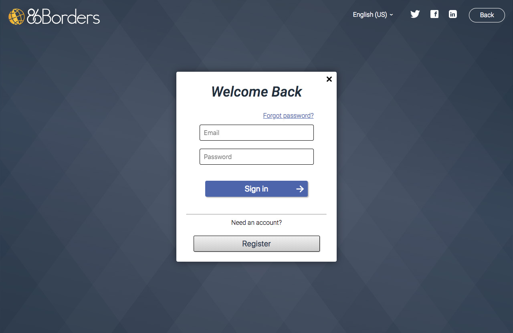
The registration card takes in the required user data for generating a profile. It implements form validation on
the client side before making a request to the server.
The rest of the external site has various animations, images, and text that are meant to provide confidence in
the quality of 86Borders products, as well as tease the user into exploring more.
The 86Borders Platform
A few years after I joined 86Borders, I took over modifications and enhancements to the 86Borders platform. In
that time, I’ve focused on improvements to internal navigation and group actions, like adding members. Below is an
explanation of some of the key features of the platform.
At its core, 86Borders is a social media inspired communications platform, which has a focus on unifying business
processes that span disparate groups.
Individual users can set up personal profiles with photos and other personal details.
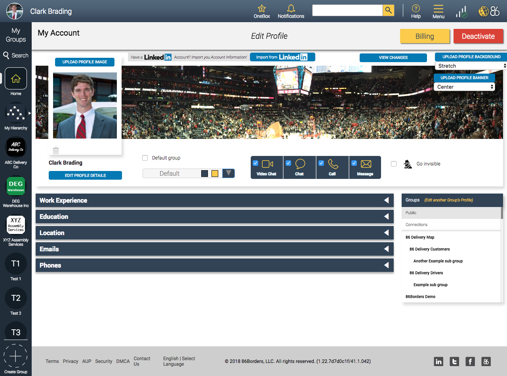
Organizations can set up groups with logos, thumbnails, banners, and about info to identify their brand.
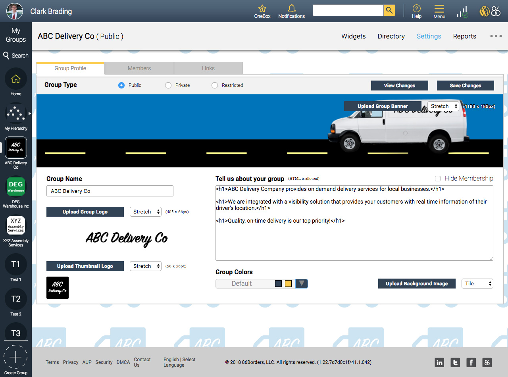
Administrators can explicitly add members to a private group, or they can make the group public, so members can
find the group and join voluntarily.
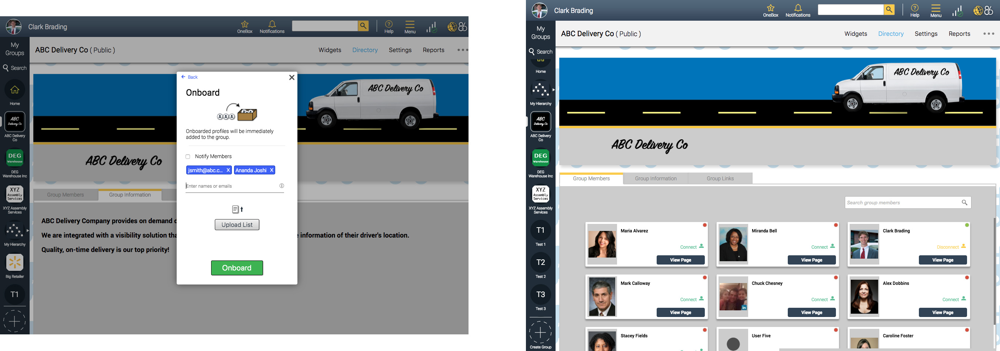
Groups to which the user belong appear in the Group navigation bar on the left.
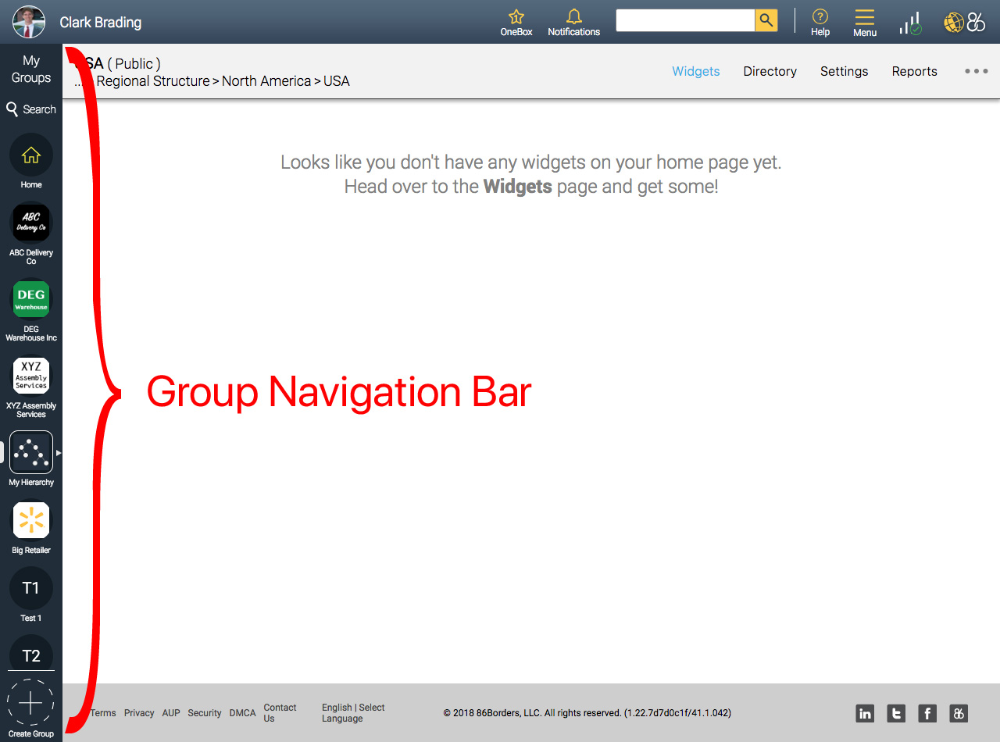
Groups are established within a group hierarchy, creating parent-child relationships. Admins of the parent group
have access and administrative rights over child Groups.
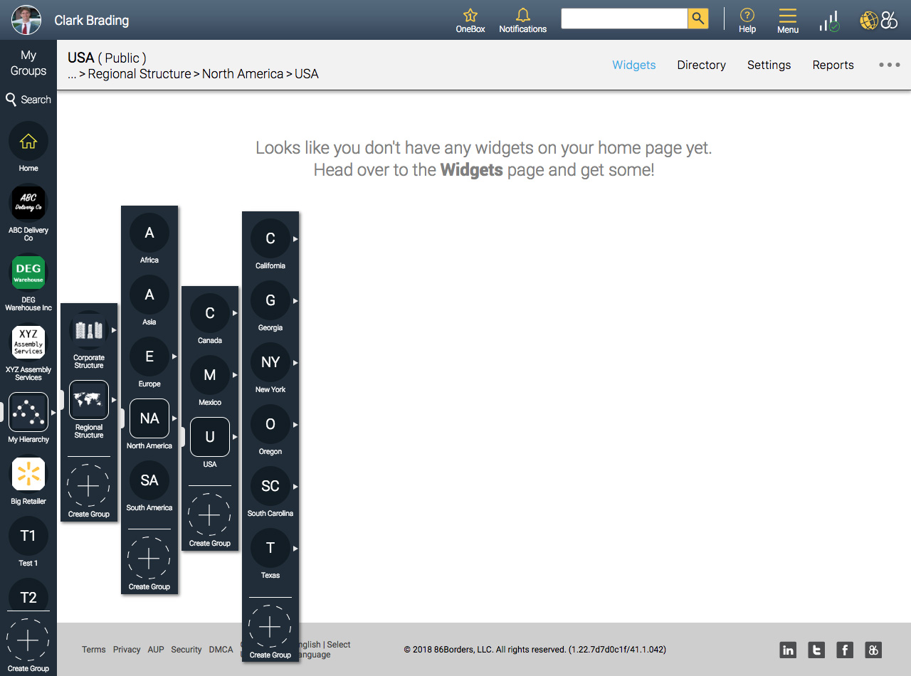
The platform hosts business-grade third-party applications called “widgets”, that use the relationships between
Groups and individuals to define the workflow. 86Borders has created two comprehensive widgets on the platform:
86EnRoute and a proprietary healthcare widget.
In the following section I will go over the 86EnRoute widget, including the ecosystem it services.
86EnRoute
86EnRoute was the first product created on the platform. It is a logistics solution which offers a mobile app for
workers, an Operations Dashboard for management, and client notifications with visibility.
During the time that I’ve been in charge of the improvements to 86EnRoute, we’ve transformed the navigation and
functionality of the worker app, focused on the Customer widget as being accessed through a hyperlink, and added
more features to the Operations Dashboard widget.
The Worker App
The keystone piece of 86EnRoute is the worker app. It provides the day’s orders to the worker and transmits their
location. Their location can be used to trigger geofence-based status updates and provide real-time location
information to managers and customers.
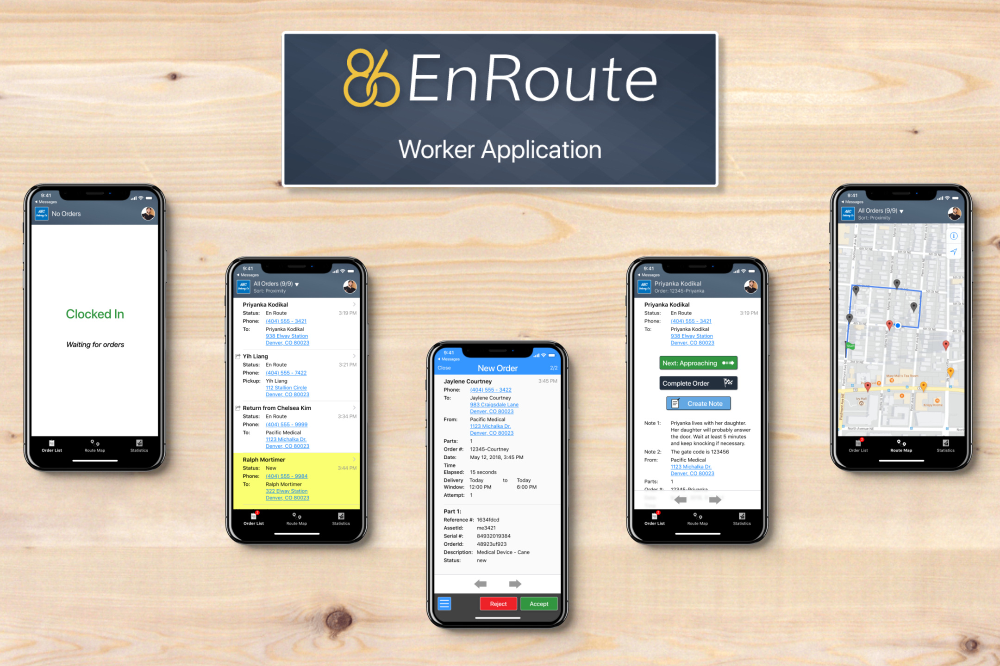
Branding is embedded in the app in the form of a thumbnail in the upper left corner of the header. The thumbnail
used here is set for the particular group within the 86Borders platform.
The Order List view displays a list of the worker’s orders. Right from the list the worker can call or get
directions to the order destination.
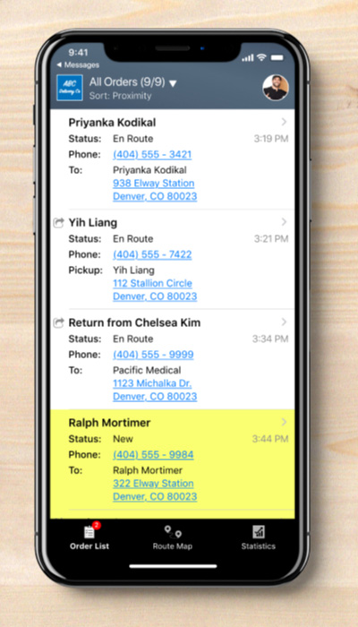
Tapping on an Order’s details will show more information about the order and provide access to functionalities
like, taking a photo, getting an electronic signature, or advancing the status manually.
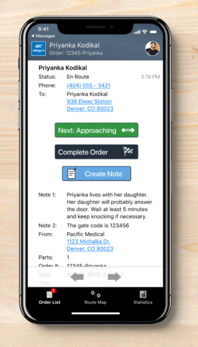
Workers can see the locations of their orders on a map, allowing them to have an overview of the day’s
route.
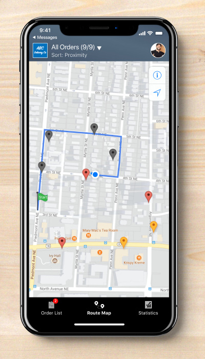
The Operations Dashboard
Administrators of the 86EnRoute solution have access to the Operations Dashboard. It consists of a map displaying
points of interest, including worker locations, order pickup locations, and order dropoff locations.
The Settings panel provides configuration options for certain features. Primarily, when to send notifications to
customers and what the notifications say. Also, in which status to grant visibility.
The Order History panel lets the user access details of past (and present) orders, including electronic signature
images and proof of delivery photos.
Customer Notifications & Visibility
If configured to do so, customers receive notifications on status changes. They come in as text messages with a
hyperlink to the Customer widget. Customers open the link and see details about the progress of their order on a
web page.
Admins may customize each notification message based on the status.
The Customer widget is branded by the group, using the thumbnails defined in Group settings. It also identifies
the status of the order and provides an estimate of arrival time.
If enabled for the current status, a map appears in the middle of the screen, marking the worker’s current
location and the destination.
Once the order is complete, the customer has the opportunity to review the service.
Healthcare
86Borders has a large healthcare focus. The piece that I am involved with here, is a transformation of 86EnRoute
to suit healthcare related services.
The adaptation requires an altered version of the worker app, which includes a vehicle inspection form, a route
preparation check list, and the ability to ask survey questions on site. Adding these features to the worker app,
provides a way for this particular non-profit company to affordably move from a manual paper-based logistics
system to a fully electronic one.
At the beginning of the workday, workers have to complete a vehicle inspection form for insurance purposes.
To prepare a route, all the worker has to do is load the appropriate number of each item into the van. This used
to be a manual process with no cumulative tally.
Text Message Marketing
A rather new product that we’ve developed on the 86Borders Platform is something called Text Message Marketing.
It has been created as an offshoot of the idea of sending customers notifications via text message; text messages
have a 98% read-rate.
Because of the high read-rate of text messages, creating a promotional campaign using text messages can be highly
effective. The barrier to entry, however, is the need to opt-in target phone numbers. Marketing messages have
strict laws in comparison to service-based notifications.
Text Message Marketing consists of 4 quadrants. Essentially, the user loads in a list of customers with phone
numbers. The widget keeps track of phone numbers that have been opted-in. Opt-in messages and the marketing
messages can be changed at any time and sent individually.
SESRA
Director of Communications

sesra.ussquash.com
The Southeastern Squash Racquets Association (SESRA) was founded in the 1980’s. It functions as a non-profit
organization to aid the growth of the squash community in the southeast and promote development of junior squash
players.
In January 2017 I was invited to join the board as Director of Communications, to revive the website and expand
community outreach using email programs and social media. Over this time, we’ve consistently added content to the
website and updated the social media profiles to reflect the SESRA brand; club pros and contributors can log onto
these profiles to share content.
WordPress Website
sesra.ussquash.com is a WordPress website hosted as a subdomain of
ussquash.com. The technology representative from US Squash created an instance for us to use, based on their
theme.
The website provides a place for members to go to find out recent activities within the SESRA community. These
articles appear on the home page.
A calendar keeps track of upcoming events, including a compact version that sits on the home page.
Visitors can learn about some of the well-known SESRA club pros in the “Know Your Pro” section.
The SESRA twitter feed is embedded on the home page.
Constant Contact
Perhaps the most effective tool used by SESRA for its outreach goals is the email marketing tool, Constant
Contact. It allows us to share important news with targeted SESRA members in a secure manner, as well as reach
members who might not otherwise visit the website.
Designing an email campaign and branding it with our logo and colors is simple.
We have used Constant Contact to assemble email lists that go to specific groups of people.
When email campaigns go out, we can see what the open rate was.
Facebook, Twitter, Instagram
SESRA has official social media accounts: Facebook,
Twitter, & Instagram. Their accounts are accessible by trusted board
members and contributors, so they can post things that are happening as they happen.